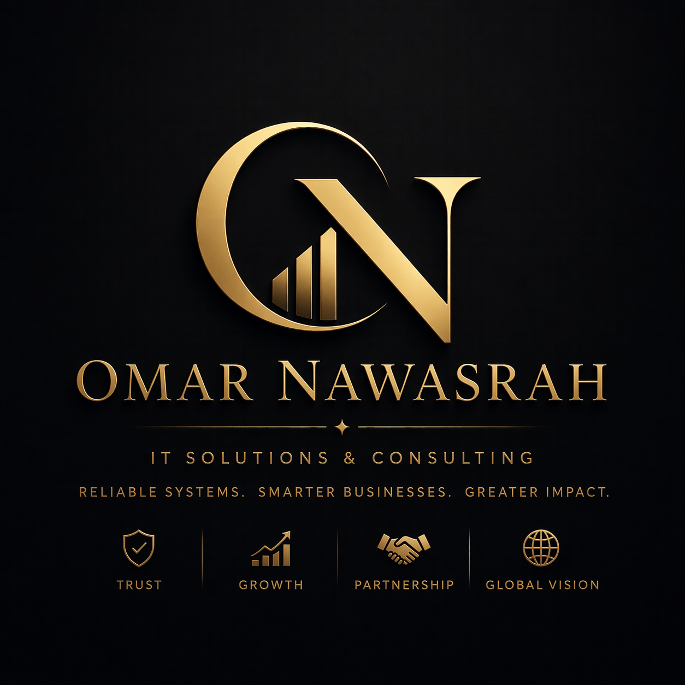

IT Support
Fix technical issues 2× faster and keep your work running without interruptions or delays.
You get fast, reliable IT support that reduces downtime, restores performance, and keeps your work running without interruption.
Trusted IT support through real-world enterprise environments at GTS — Amman.
✔ Response within hour • ✔ Real fixes, not temporary solutions • ✔ Trusted daily support

Even 30 minutes per day = 10+ hours lost monthly.
One failure can stop your entire workflow instantly.
Critical issues always happen at the worst possible time.
Get faster systems, fewer interruptions, and stable performance that keeps your work running smoothly.
Fix technical issues 2× faster and keep your work running without interruptions or delays.
Restore performance and stability, extend your device life, and avoid unnecessary replacement costs.
Get a clean, optimized system that runs up to 50% faster and stays stable long-term.
Eliminate connection issues and improve network stability for smoother, uninterrupted work.
If your system is not working properly, you can get direct support immediately.
Contact on WhatsApp NowFix urgent issues the same day so your work doesn’t stop.
Get a fully optimized system that reduces future problems and saves time.
Keep your business running smoothly with reliable technical support.
Real-world support experience with actual systems used in daily business operations.
Fast diagnosis so you lose less time waiting for solutions.
Reliable fixes that reduce repeated issues and long-term costs.
Hands-on field and support experience with real-world operational demands.
Supported users, maintained systems, resolved incidents, and contributed to stable IT operations across daily business environments. Focused on fast diagnosis, clear communication, and long-term reliability.
You get reliable technical solutions focused on saving your time, reducing downtime, and keeping your systems running efficiently. Every issue is handled with a focus on root-cause fixes so you don't face the same problem again.
Most issues can be diagnosed within minutes. Send your problem and get a clear next step immediately.
Get Instant DiagnosisGet fast help with your technical issue. Describe the problem and receive a clear solution quickly.
Every hour lost to system problems is lost productivity. Get it fixed quickly and correctly.
Diagnose My Issue